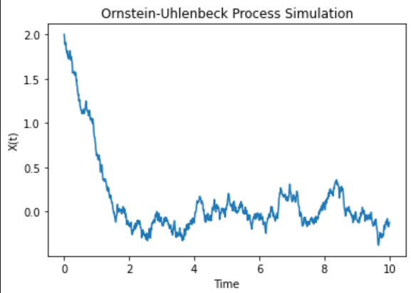

SDE, Weiner Process, ITO’s Lemma and Reverse Time Equation#
Motivation#
I wrote this blog as I was trying to understand the math behind the diffusion model.Though one can understand the algorithm of differernt types of formulation under diffusion models such as herirachical VAE, Score based models, Rectiflow, flow models without knowing much about SDE, to understand in detail why they all fall under the same category I beleive a deeper understanding of weineer process, OU process is needed, especaily the stochastic calculas which is the key to ITO’s lemma, forward and backward equations.
In this section a brief informal intro to wiener process and why stocastic calculas is provided and in the later section a formal definition is tried to be given.
Introduction#
Informally we can define stocashtic process to be a collection of random varibales \(\{X_1 ,X_1,X_2,...\}\) indexed by \(t\) (mostly time). At each time \(t\) the value is defined by the value \(X_t\). For example consider a ball moving in space at time \(t\), if the position(\(s_t\)) of the ball after a time \(dt\) is influenced by a random variable \(\epsilon_t\), the position at time \(t + dt\) would be random. The ball would be moving randomly in space, for each infinitesimally time \(dt\) the change in position would be described by \(\epsilon_t\). That is:
Notice that unlike normal ODE, it is hard to define the integration of such a process. At each step \(dt\) the change is random, so you cannot form a classical Riemann sum in the usual way, each increment \(\epsilon_t\) * \(dt\) is a random kick and the path \(s_t\) is almost surely nowhere differentiable. To make sense of:
we need to stochastic calculas. To see the probability distribution of positions at a given time step, where the ball might end up (final distribution), how the trajectory evolves for all of this we need stochastic calculas.
Morever, when we model a ball’s random motion, we’re really looking at an uncountable collection of random variables, one for each instant in a continuous time interval. In other words, each possible trajectory is a function \(s :[0,T]→R\)
and there are uncountably many such functions. Moreover, each trajectory itself involves uncountably many infinitesimal time steps. Because of this double infinity (uncountably many paths, each with uncountably many increments), the naïve, undergraduate definition of probability assign a number to every subset of outcomes breaks down. If one tried to give every possible subset of \(R\) (or of the space of trajectories) a probability, one would immediately run into paradoxes like Banach–Tarski: for example, Banach–Tarski shows that you can partition a solid ball into finitely many non‐measurable pieces and reassemble them into two balls of the same volume as the original, so in this case assiging a probability of 1 to the initial solid ball won’t work. To avoid such contradictions, modern probability theory restricts attention to a carefully chosen sigma‐algebra of measurable sets (for instance, the Borel sigma‐algebra on \(R\)). In that way, every event we care about, the ball is in Region A at time \(t\), its maximum displacement up to time \(t\) lies in some interval, etc., is guaranteed to be measurable, and every non‐measurable, paradoxical subset is simply excluded from the probability model. (We will start probability measure definition and other realted things to understad weiner process in the below sections).
Let’s get back to
here if we chose \(\epsilon\) to be a gausian distribution with mean zero informally we will get a weiner process (\(W_t\)).
A Wiener process \(W_t\) is a continuous-time stochastic process with the following properties:
\(W(0) = 0\). Weiner process starts with zero as the intial condition.
Time correlation is zero: The changes in the process over non-overlapping time intervals are independent.
Gaussian increments: The change \(W_{t+u} − W_t\) is normally distributed.
Continuous paths: The process has continuous paths in time. There is no discontiuity in the paths.
The stochastic equation one defined below is encountered more in computer science(rectified flow), physics and finance. The ultimate goal of this post is to introduce ITO’s lemma and use it to solve such process. At the end we solve a OU process.
where, \(\alpha(X,t)\) represents the drift term, \(\beta(X,t)\) is the diffusion term, and \(W_t\) represents weiner process. This equation describes how a system’s state \(X(t)\) evolves under both deterministic forces and random fluctuations.
Probability Spaces And Random Variables#
As discussed above we need measure theoretic definition of probability to avoid getting into problems. Lets start with defining sigma algebra which is kinda similar to event space.
Definition of a σ-algebra
Let \(\Omega\) be a non-empty set, and let \(\mathcal{F}\) be a collection of subsets of \(\Omega\).
We say that \(\mathcal{F}\) is a \(\sigma\)-algebra if it satisfies the following three properties:
The empty set belongs to \(\mathcal{F}\): \(\emptyset \in \mathcal{F}\)
Closed under complement: Whenever a set \(A\) belongs to \(\mathcal{F}\), its complement \(A^c\) also belongs to \(\mathcal{F}\). If \(A \in \mathcal{F}\), then \(A^c \in \mathcal{F}\)
Closed under countable unions: Whenever a sequence of sets \(A_1, A_2, A_3, \ldots\) belongs to \(\mathcal{F}\), their union also belongs to \(\mathcal{F}\). If \(A_1, A_2, A_3, \ldots \in \mathcal{F}\), then \(\bigcup_{n=1}^\infty A_n \in \mathcal{F}\)
The elements of a σ-algebra are called measurable sets, and the pair (Ω, 𝓕) defines a measurable space. Here Ω is like sample space, 𝓕 is like the events.
Whenever we want to measure something( like probability) we want our event space 𝓕 which is the subset of Ω to be σ-algebra so that our measure won’t be ill-defined (we will see a example below). By defining our event space like this we are making sure that we add the individual parts of the event space we get a non-overlapping parts, like adding individual pieces of sphere to make up a unit volume. For finite event spaces we normally use the power set \(2^Ω\) as the event space which has all the properties defined above.
Now lets define probability measure,
Definition of a Probability Measure
A probability measure P on an event space 𝓕 is a function that satisfies the following properties:
Maps events to the unit interval: \(P: \mathcal{F} \rightarrow [0, 1]\)
Returns 0 for the empty set and 1 for the entire space: \(P(\emptyset) = 0\) and \(P(\Omega) = 1\)
Satisfies countable additivity:
For any countable collection of pairwise disjoint events \(\{E_i\}_{i \in I}\) (i.e., \(E_i \cap E_j = \emptyset\) for \(i \neq j\)), their probabilities add up:
\(P\left(\bigcup_{i \in I} E_i\right) = \sum_{i \in I} P(E_i) \)
How does this new definition of sample space and probability measure help us? Lets look at The Banach–Tarski paradox, it roughly states that that:
A solid sphere in 3D space can be decomposed into a finite number of disjoint subsets, which can be reassembled using only rotations and translations to form two identical spheres each the same size as the original.
This seems to contradict our intuitive understanding of volume and conservation. How can one break one ball into parts and rearrange them into two identical balls? The sets involved in the Banach–Tarski paradox are non-measurable, they cannot be assigned a meaningful volume using any countably additive measure like Lebesgue measure.
So how σ-algebras and probability measures help, Let’s look at the definitions.
The σ-algebra is closed under countable unions and complements.
This closure ensures internal consistency.
Only subsets of Ω that live in this structure can be measured.
The Banach–Tarski sets cannot be constructed within a σ-algebra like the Borel σ-algebra.And moe so,
The probability measure \(P:F→[0,1]P:F→[0,1]\) is only defined on measurable sets (those in \(𝓕\)).
So, any event or set not in 𝓕 is simply not assigned a probability. It lies outside the scope of the theory.
This avoids contradictions like “duplicating” probability mass, because one can only measure events where countable additivity holds.
Banach–Tarski fails here because it relies on unmeasurable subsets (not in 𝓕). There’s no way to define a probability measure on all subsets of ℝ³ that:
Is countably additive, and
Is rotation-invariant, and
Assigns the expected volume to regular sets,
without contradicting Banach–Tarski. Hope the above explanation gave some intuition. Lets define random variable.
A random variable \(X\) is a measurable function \(X: \Omega \rightarrow E \subseteq \mathbb{R}\) where:
\(X\) must be part of a measurable space, \((E, \mathcal{S})\) (recall: \(\mathcal{S}\) defines a \(\sigma\)-algebra on the set \(E\)). For finite or countably infinite values of \(X\), we generally use the powerset of \(E\). Otherwise, we will typically use the Borel set for uncountably infinite sets (e.g., the real numbers).
For all \(s \in \mathcal{S}\), the pre-image of \(s\) under \(X\) is in \(\mathcal{F}\). More precisely:
\( \{X \in s\} := \{\omega \in \Omega | X(\omega) \in s\} \in \mathcal{F} \)
What this essitially does is that, it helps us to define probability measure for non-numericals (like proability of number of heads less than 3). It helps us map these kind of statement(from the sample space \(\Omega\)) to a real numbers(\(E\)). The second condition ensures that the numericals we are assiging to the events have well defined probability by making sure \(s \in \mathcal{F}\). Also note that the \(\sigma (X) \in \mathcal{F} \). What this means is that we can assign probability to all the sets defined by the \(\sigma\)-algebra of \(X\) since they are a subset of \(\mathcal{F}\).
Stochastic Process#
Stochastic Process is defined as:
Suppose that \((\Omega, \mathcal{F}, P)\) is a probability space, and that \(T \subset \mathbb{R}\) is of infinite cardinality. Suppose further that for each \(t \in T\), there is a random variable \(X_t: \Omega \rightarrow \mathbb{R}\) defined on \((\Omega, \mathcal{F}, P)\). The function \(X: T \times \Omega \rightarrow \mathbb{R}\) defined by \(X(t, \omega) = X_t(\omega)\) is called a stochastic process with indexing set \(T\), and is written as \(X = \{X_t, t \in T\}\).
Lets break it down. The elements of the sample space \(\Omega\) are infinite. For example, suppose our sample space is tossing of coins inifinite number of times, then \(\omega\) one of the elements can be an infinite sequence of only heads.
The second thing is that previously we said stocashtic process to be a collection of random varibales \(\{X_1 ,X_1,X_2,...\}\) indexed by \(t\), here \(t\) is continous and is inifinite and \(X_t\) takes both \(t\) and \(\omega\). So, \(X_t ( \omega)\) takes a infinite element and maps it to real number[\(\in \mathcal(F) \)] so that we can measure the probability.
Note that here \(X_t\) is not restircted by time, meaning the probaility the random variable \(X_t\) assigns to \(\omega\) at time \(t\) can depend on the future. For example let \(\omega\) be 4 heads and thereafter tails \(\{H,H,H,H,T,...\}\), so at \(t = 4\), the probability the random varibale \(X_4\) assings can depend of the future, meaning the occurences of tails. To restrict our time, to be causal we need something called adapted processes. Before definig it we need to see what filtration means.
If we have want to our random variable to not depend on the future, how could one define it? what restriction can be put in place?
Note that the events are defined by \(\mathcal F\).
We need to make sure that the random variable \(X_t\) depend only on \(\{\omega_1,\omega_2,\omega_3,\omega_4,...\omega_t\}\)
To make this happen we need to modify the event space such that at time \(t\) the event space has only events upto time \(t\) and not the future.
The events(\(\mathcal F_t\)) at time \(t\) must have events till \(t\), at time \(t+1\) the events \(\mathcal F_{t+1}\) should have all the events till time t and events at time \(t+1\).
For the above we need a concept called filtration which is defined on our event space \(\mathcal F\) and our index \(T\),
A filtration \(\mathcal{F}\) is an ordered collection of sub-\(\sigma\)-algebras \(\mathcal{F} := (\mathcal{F}_t)_{t \in T}\) where \(\mathcal{F}_t\) is a sub-\(\sigma\)-algebra of \(\mathcal{F}\) and \(\mathcal{F}_{t_1} \subseteq \mathcal{F}_{t_2}\) for all \(t_1 \le t_2\).
What this does are the above mentioned points, basically it breaks our \(F\) into partitions such that each partition \(F_t\) is a superset of \(F_{t+1}\).
Now we can define Adapted process:
A stochastic process \(X_t: T \times \Omega\) is adapted to the filtration \((\mathcal{F}_t)_{t \in T}\) if the random variable \(X_t\) is \(\mathcal{F}_t\) - measurable for all \(t\).
Thus \(\sigma (X_t)\) is only \(F_t\) measurable and \(F_t\) does not depend on the future.
Discrete Time Weiner Process#
Random walk#
A random walk is the random walk on the integer number line \(\mathcal Z\) which starts at 0, and at each step moves +1 or −1 with equal probability.
where \(\epsilon\)
The symmetric random walk \(S_n\) is defined as:
Scaled Symmetric Random Walk#
The scaled symetric random walk for an positive integer \(n\) is defined as:
where \(\{X_i\}\) are i.i.d. random variables with
where \(S_{nt}\) is the simple random walk defined above and \(t\) is continous time. If \(nt\) is a integer then \(W_n(t)\) takes \(S_{nt}\), else it will be an interpolation between the two consecutive \(S_{nt}\). For example,lets look at \(W_{10}(t)\). For \(t = 0\), the \(W_{10}(t)\) will be zero, at \(t = 10\) it will be \(\pm 1\), for \(t < 10\) it will be a iterpolation between 0 and \(\pm 1\).
Some properties of the Scaled Symmetric Random Walk:
1. Independence of Increments
Let \(0 = t_0 < t_1 < t_2 < \dots < t_m\) be points in time, and define the increments of the scaled walk:
These increments are independent.
Why?
Each increment involves a sum over disjoint sets of the \(X_i\)’s:
Since the \(X_j\)’s are independent and the intervals do not overlap, the increments of the scaled walk are also independent.
2. Expectation and Variance of Increments
Let us now compute the expectation and variance of the increment \(W_n(t_{i+1}) - W_n(t_i)\).
2.1 Expectation
2.2 Variance
Since \(\text{Var}(X_j) = 1\) for all \(j\), and the number of terms in the sum is approximately \(n(t_{i+1} - t_i)\), we get:
A Interesting Case Arises As \(n \to \infty\).#
This is where the scaled symmetric random walk truly becomes fascinating, as it converges to a continuous-time stochastic process known as Brownian Motion (or the Wiener Process), lets see how and some of it’s properties.
Continuity: As \(n \to \infty\), the number of steps \(\lfloor nt \rfloor\) for any given \(t\) becomes infinitely large. The discrete steps of the random walk become infinitesimally small in time and magnitude (due to the \(\frac{1}{\sqrt{n}}\) scaling). This effectively smooths out the random walk, and \(W_n(t)\) converges in distribution to a continuous path. We no longer need to interpolate between discrete steps, the process itself becomes continuous.
Independence of Increments (in the limit): This property is preserved in the limit. Brownian motion also has independent increments. This means that the future movements of a Brownian motion, given its current position, are independent of its past movements. This is a characteristic feature of many memoryless stochastic processes.
Expectation in the Limit: As derived above, \(\mathbb{E}[W_n(t)] = \mathbb{E}[\frac{1}{\sqrt{n}}\sum_{j=1}^{\lfloor nt \rfloor} X_j] = 0\). This holds true as \(n \to \infty\). So, for Brownian motion \(B(t)\), \(\mathbb{E}[B(t)] = 0\). This reflects the no drift characteristic of standard Brownian motion, it’s equally likely to move up (+1) or down (-1) over any given time interval.
Variance in the Limit: As shown, \(\text{Var}(W_n(t)) = \text{Var}(W_n(t) - W_n(0)) \approx t\). In the limit as \(n \to \infty\), this approximation becomes exact. Thus, for Brownian motion \(B(t)\), \(\text{Var}(B(t)) = t\). This is a defining characteristic, the variance of Brownian motion at time \(t\) is simply \(t\). This means the spread of the process from its starting point grows linearly with time.
Convergence to a Normal Distribution (Central Limit Theorem): This is the most crucial point for understanding the link between the scaled random walk and Brownian motion. The Central Limit Theorem (CLT) states that the sum of a large number of independent and identically distributed (i.i.d.) random variables, when properly normalized, will be approximately normally distributed, regardless of the original distribution of the individual variables.
In our case, \(W_n(t) = \frac{1}{\sqrt{n}} \sum_{j=1}^{nt} X_j\) is a sum of \(nt\) i.i.d. random variables \(X_j\), each with mean \(0\) and variance \(1\). As \(n \to \infty\), the number of terms \(nt\) also goes to infinity. Therefore, by the CLT, \(W_n(t)\) converges in distribution to a normal random variable.
Specifically, since \(\mathbb{E}[W_n(t)] = 0\) and \(\text{Var}(W_n(t)) \approx t\), as \(n \to \infty\), \(W_n(t)\) converges in distribution to a normal distribution with mean \(0\) and variance \(t\), i.e \(\mathcal{N}(0, t)\).
Weiner process#
A stochastic process \(\{W(t), t \ge 0\}\) is called a Wiener process (or standard Brownian motion) if it satisfies the following properties:
Initial Condition: \(W(0) = 0\)
Independent Increments: For all \(0 \le t_0 < t_1 < \dots < t_n\), the increments \(W(t_1) - W(t_0), W(t_2) - W(t_1), \ldots, W(t_n) - W(t_{n-1})\) are independent random variables.
Stationary Increments: For \(s < t\), the increment \(W(t) - W(s) \sim \mathcal{N}(0, t - s)\), i.e., it is normally distributed with mean \(0\) and variance \(t - s\).
Continuity: The sample paths of \(W(t)\) are almost surely continuous, meaning:
Additional Notes:
It is a Gaussian process, meaning any finite collection of random variables \((W(t_1), \dots, W(t_n))\) has a multivariate normal distribution.
It has zero drift and unit volatility:
\[\mathbb{E}[W(t)] = 0, \quad \text{Var}(W(t)) = t\]
One way to think of weiner process is to imagine watching the motion of a dust particle suspended in air under a microscope. The particle jiggles around in a random, constantly collides with air molecules. This chaotic, continuous, random motion is the physical inspiration for Brownian motion, and the Wiener process is the precise mathematical model of that behavior.
Total Variation#
Taking a look at total variation helps us understand why weiner process is not differentiable.
For a function \(f: [0, T] \to \mathbb{R}\), the total variation over \([0, T]\) is:
where the supremum is taken over all partitions \(\Pi = \{0 = t_0 < t_1 < \dots < t_n = T\}\) of the interval.
Total variation of a Wiener process (Brownian motion) over any interval \([0,T]\) is infinite almost surely.
Proof:
Let \(\Delta t = t_{i+1} - t_i\), and remember that:
\(W_{t_{i+1}} - W_{t_i} \sim \mathcal{N}(0, \Delta t)\).
So this increment is a normal random variable with, Mean: \(0\), Variance: \(\Delta t\).
Let \(X \sim \mathcal{N}(0, \Delta t)\). We want:
Known Result: Expected Absolute Value of a Normal Variable If \(X \sim \mathcal{N}(0, \sigma^2)\), then:
In our case, \(\sigma = \sqrt{\Delta t}\)
Suppose we break \([0, T]\) into \(n\) equal intervals of length \(\Delta t = T/n\).
For each tiny interval, the expected absolute change is:
Summing this over all \(n\) intervals:
As we use finer and finer partitions (smaller \(\Delta t\)), we are adding more and more small wobbles, and they add up to infinity.
Comparison to Smooth Functions, For a smooth function, like \(f(t) = t\) ( or any polynomial function):
The absolute change in each small interval goes down linearly with \(\Delta t\).
So the total sum over \(n\) intervals stays finite.
Brownian motion is different:
In each small interval, the change is random.
The size of the change shrinks like \(\sqrt{\Delta t}\), which isn’t fast enough to make the total sum converge.
Imagine zooming in on a Brownian path. Unlike a smooth curve:
One doesn’t see a line, just more noise
The closer one zooms, the more erratic the behavior appears
So every level of detail contributes more total movement
We are summing infinitely many tiny but not tiny enough movements, and they diverge Brownian motion has infinite total variation because it fluctuates so wildly and continuously, at every time scale, it adds up too much wiggle to be finite. This is why classical calculus breaks down.
Quadratic Variation.#
The quadratic variation of \(X\) over \([0,T]\) is:
Where \(\Pi = \{0 = t_0 < t_1 < \dots < t_n = T\}\) is a partition of \([0,T]\) and \(|\Pi| = \max_i (t_{i+1} - t_i)\) is the mesh of the partition. The limit is taken in probability.
For the smooth functions \(f\), the quadratic variation is \([f]_T = 0\) for all \(T \ge 0\)
Proof:
Taking any partition \(\Pi = \{0 = t_0 < t_1 < \dots < t_n = T\}\).
Since \(f(t) = t\), the increments are:
Then the quadratic variation sum becomes:
Now suppose the mesh of the partition is \(|\Pi| = \max_i \Delta t_i\). Then:
(because \(\sum \Delta t_i = T\), the total length of the interval)
So:
Now take the limit as \(|\Pi| \to 0\):
So the quadratic variation of \(f(t) = t\) over any interval is zero.
Now lets compute it for weiner process, recall that weiner moition is higly irregular, the total variation is infinity, the paths are unpredictable. But if we compute the Quadratic variation of the brownian motion, we get something predictable and deterministic.
For the Wiener process \(W\), the quadratic variation is \([W]_T = T\) for all \(T \ge 0\) almost surely.
Proof: The quadratic variation for a partition is:
This quantity is a random variable since it depends on the particular outcome path of the Wiener process (recall quadratic variation is with respect to a particular realized path).
To prove the theorem, we need to show that the sampled quadratic variation converges to \(T\) as \(|\Pi| \to 0\). This can be accomplished by showing \(\mathbb{E}[Q_\Pi] = T\) and \(\text{Var}[Q_\Pi] \to 0\), which says that we will converge to \(T\) regardless of the path taken.
We know that each increment in the Wiener process is independent; thus their sums are the sums of the respective means and variances of each increment. So given that we have:
We can easily compute \(\mathbb{E}[Q_\Pi]\) as desired:
From here, we use the fact that the expected value of the fourth moment of a normal random variable with zero mean is three times its variance. Anticipating the quantity we’ll need to compute the variance, we have:
Computing the variance of the quadratic variation for each increment:
From here, we can finally compute the variance:
As \(\lim_{|\Pi| \to 0} \text{Var}[Q_\Pi] = 0\), therefore we have shown that \(\lim_{|\Pi| \to 0} Q_\Pi = T\) as required.
Quadratic variation of Brownian motion measures the accumulated squared fluctuations of the path. Even though the path is rough and random, the squared fluctuations add up deterministically:
Now if we step back and look at the big picture, this leads to one beautiful result. If we take almost any sample path of a Wiener process and keep dividing the time into smaller and smaller pieces, and then add up the square of the increments, the total will match the length of the time interval. Like, if you’re checking over 5 seconds, the sum will be 5. Very clean. It grows at 1 unit per unit of time.
Honestly, that’s kind of mind-blowing. Because the path itself is totally random, jumping randomly, but somehow this squared sum still behaves in a very regular and predictable way. And what’s even more surprising is that the quadratic variation is not zero, even though the path is continuous. Usually, we think if something is continuous and smooth, it shouldn’t change that much. But here, it’s continuous, just not differentiable anywhere. It looks smooth from far, but when we zoom in, it’s completely jagged.
Informally we will write the quadratic variation as:
Please note that \(dW\) is normally distributed, so the above is formally valid only when we sum many of these small squared increments over time.
Also we can write,
Proof:
Let \(X(t)\) and \(Y(t)\) be two processes. Their quadratic covariation over interval \([0,T]\) is defined as:
for a partition \(\Pi = \{0 = t_0 < t_1 < \dots < t_n = T\}\)
For
Now notice:
\(W(t_i) - W(t_{i-1}) \sim \mathcal{N}(0, t_i - t_{i-1})\), and
\(t_i - t_{i-1}\) is deterministic.
So this is a sum of independent mean-zero random variables times deterministic numbers. The expected value of each term is:
And the variance of the entire sum becomes small as \(|\Pi| \to 0\), because each increment is independent and scaled by vanishingly small \((t_i - t_{i-1})\).
So:
Therefore,
because the process \([W(t), t] \equiv 0\), i.e., it’s constant in time.
Also note that,
ITO’s Lemma#
From this section onwarads, it’s going to be a little bit informal.
Most of the SDE’s we encounter(I have encountered) will be of the form:
Where,
\(Y(t)\) is a deterministic function of \(X(t)\) which is not deterministic. We would like to know how \(Y(t)\) changes for very small time differentials \(dt\). So we actually want to be able to define the following equation:
ITO’s lemma provides us a solution to answer this, it states that:
given \(f\) is to be twice differentiable with respect to \(X_t\) and at least once differentiable with respect to \(t\).
Proof:
The first step is to define the Taylor expansion for \(f(t,X_t)\) in its general:
Applying the limit: \([t→t_0,X_t→X_0]\)
The next step is substituting \( dX(t) = \mu(t)dt + \sigma(t)dW_t \) into the equation:
Recall from before that,
\(dW(t)\,dt = 0\)
\(dt\,dt = 0 \quad \text{and,}\)
\(dW(t)\,dW(t) = 0\)
Applying this we get,
Now lets look into OU process and ITO’s lemma application.
ITO’s Product Rule#
If we have two stochastic process \(U(t)\) and \(V(t)\), where
and
then,
Proof: This is a direct application of ITO’s lemma,
We want to find \(dY_t = d(U_t V_t)\). We can use Itô’s Lemma for a function \(f(U,V)=UV\).
First, let’s find the partial derivatives:
Itô’s Lemma for a function of two Itô processes, \(f(U_t,V_t)\), is given by:
The higher order terms become zero as \(dW^n\) where \(n > 2\) becomes zero, \(dt^n\) where n >= 2 becomes zero, \(dW^n * dt^k\) for any n,k becomes zero. (See the quadratic variation section).
This simplies to,
When \(U_t\) is a determinitic funtion, then the product rule is ordinary chain rule,
Ornstein-Uhlenbeck Process#
The Ornstein–Uhlenbeck (OU) process is one of the most fundamental stochastic processes in continuous time. It models systems that evolve randomly, but with a natural tendency to drift back toward a long-term mean. Unlike standard Brownian motion, which wanders off indefinitely, the OU process is mean-reverting, it fluctuates around a central value, making it useful in modeling physical systems, finance, and in diffusion models.
Mathematically, the OU process is defined by the stochastic differential equation (SDE):
Here:
\(\mu\) is the long-term mean toward which the process is pulled,
\(\theta > 0\) is the rate of mean reversion,
\(\sigma\) controls the intensity of the randomness, and
\(W_t\) is standard Brownian motion (Wiener process).
The term \(\theta(\mu - X_t) \, dt\) causes the process to drift back toward \(\mu\) whenever it deviates, while \(\sigma\,dW_t\) injects randomness into the motion. This balance between deterministic pull and random noise gives the OU process its characteristic wiggly but stable behavior.
Ornstein–Uhlenbeck (OU) Process Solution#
Lets solve the Ornstein–Uhlenbeck (OU) process, defined by the stochastic differential equation (SDE):
This is a linear stochastic differential equation, and it matches the form:
except with an inhomogeneous drift \(\theta\mu\). So let’s proceed similarly.
Let’s apply the integrating factor method with \(e^{\theta t}\). Multiply both sides by \(e^{\theta t}\)
Let \(Y_t = e^{\theta t}X_t\). Then using Itô’s product rule:
Now substitute for \(dX_t\):
Now cancel the \(-\theta X_t\,dt\) and \(+\theta X_t\,dt\) terms:
Integrate both sides
Since \(Y_0 = X_0\), we get:
Solve for \(X_t\)
We divide both sides by \(e^{\theta t}\):
This is the classic Ornstein–Uhlenbeck process solution.
Let’s see how the mean and variance of the Ornstein–Uhlenbeck process looks like.
This expression consists of three terms:
Deterministic term: \(e^{-\theta t} X_0\)
Drift toward mean \(\mu\): \(\mu(1 - e^{-\theta t})\)
Stochastic integral: \(\sigma e^{-\theta t} \int_0^t e^{\theta s}\,dW_s\)
Mean of \(X_t\)#
We take the expectation of \(X_t\):
Assuming \(X_0\) is a constant or an initial random variable with a finite expectation, \(\mathbb{E}[e^{-\theta t} X_0] = e^{-\theta t} \mathbb{E}[X_0]\). The expectation of the stochastic integral \(\int_0^t f(s)\,dW_s\) is zero when \(f(s)\) is deterministic, \(dW_t\) is brownian and has zero mean. Thus, \(\mathbb{E}\left[\int_0^t e^{\theta s}\,dW_s\right] = 0\).
So:
Mean:
Variance of \(X_t\)#
Now we compute the variance. Since the first two terms (\(e^{-\theta t} X_0\) and \(\mu(1 - e^{-\theta t})\)) are deterministic (or at least uncorrelated with the stochastic integral if \(X_0\) is independent), and the stochastic integral has zero mean, we have:
We can write,
Recall that, \(dW\,dW = dt = ds\) which is applied in the above equation.
Now, evaluate the definite integral:
Substitute this back into the variance expression:
Variance:
Mean:
Variance:
As \(t \to \infty\), we get:
\(\mathbb{E}[X_t] \to \mu\) (since \(e^{-\theta t} \to 0\) as \(\theta > 0\))
\(\operatorname{Var}(X_t) \to \frac{\sigma^2}{2\theta}\) (since \(e^{-2\theta t} \to 0\) as \(\theta > 0\))
This shows that the OU process converges in distribution to a stationary Gaussian distribution:
Code#
# simulating OU process
import numpy as np
import matplotlib.pyplot as plt
# Parameters for the OU process
theta = 0.7 # rate of mean reversion
mu = 0.0 # Long-term mean
sigma = 0.3 # intensity of the randomness
X0 = 1.0 # Initial value
T = 10.0 # Total time
dt = 0.01 # Time step
N = int(T / dt) # Number of time steps
# Pre-allocate array for efficiency
X = np.zeros(N)
X[0] = X0
# Generate the OU process
for t in range(1, N):
dW = np.sqrt(dt) * np.random.normal(0, 1)
X[t] = X[t-1] + theta * (mu - X[t-1]) * dt + sigma * dW
# Plot the result
plt.plot(np.linspace(0, T, N), X)
plt.title("Ornstein-Uhlenbeck Process Simulation")
plt.xlabel("Time")
plt.ylabel("X(t)")
plt.show()
Graph#

Stochastic Process With Affine Drift Co-efficients.#
In the last section we saw that OU process converges to a Normal distribution.
This might make one ask a question, at any time \(t\), can we have a \(X_t\) follow a normal distribution \(X_t \sim \mathcal{N}\) or \(X_t/X_0 \sim \mathcal{N}\), as you might have expected the answer is YES, if the drift co-efficient is affine, i,e For a SDE
If
Proof:
Given a linear SDE of the form:
This can be rewritten as:
This is a linear SDE (i.e., linear in \(X\)), which can be solved using the method of integrating factors. Let us define an integrating factor:
Multiplying both sides of the SDE by \(\mu(t)\):
Using Ito’s product rule (recall that since \(\mu_t\) is determisnistic it is just chain rule):
But from the definition of \(\mu(t)\):
So substituting \(dX(t)\) and \(X(t)d\mu(t)\) into the product rule:
The \(a(t)X(t)\) terms cancel:
Integrating both sides from \(0\) to \(t\):
Multiplying both sides by \(\mu(t)^{-1} = \exp\left(\int_0^t a(s)\,ds\right)\):
Each term is now a linear combination of deterministic functions and a stochastic integral with deterministic integrand.
From the solution, \(X(t)\) can be written as:
The stochastic part is:
This is a stochastic integral of a deterministic function, hence:
It is a Gaussian random variable.
It has mean zero.
Its variance is given:
Hence \(X(t)\) is a linear transformation of a Gaussian random variable, plus deterministic terms. Therefore:
\(X(t) \mid X_0\) is normally distributed for all \(t\), i.e., Gaussian.
So , If \(f(x,t) = a(t)x + b(t)\) and \(\beta(x,t) = \beta(t)\) (i.e., independent of \(x\)), then the SDE:
has solution \(X(t) \mid X_0\) that is Gaussian-distributed for all \(t\), since the solution is a linear function of a Gaussian process.
Reverse Time Equation#
We saw OU process graph, we can see that after some time \(T\) the final state is a sample from a normal distribution. Now we can ask an interesting question here, given that we have the final state(a sample from normal distribution), can we trace back and reach the initial state? That is can we traverse back in time to reach a state from the initial distribution? Or more broadly for a stochastic process we have the forward equation given by :
for some initial state \(X_0\). If we let this proces continue for some time \(T\) and let the state be now \(X_T\). Can go back in reverse direction? Can we start from \(X_T\) a state from the final distribution and go back to a state from the intial distribution? The answer to that is YES!!.
The reverse time equation allows us to do this, which is given by:
So by following this reverse SDE one can go back to a state from the initial distribution.